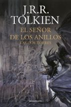
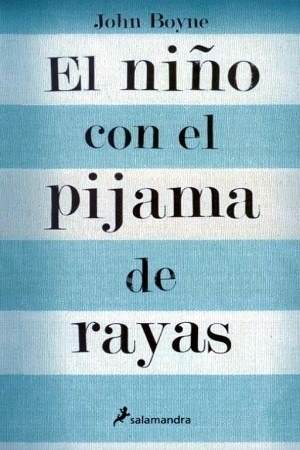
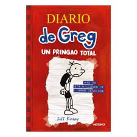

Reseñas

Título:
El señor de los anillos: las dos torres
Autor:
J.R.R Tolkien
Fecha de edición:
25/05/2022
Sinopsis:
«Ningún escritor del género ha aprovechado tanto como Tolkien las propiedades características de la Misión, el
viaje heróico, el Objeto Numinoso, satisfaciendo nuestro sentido de la realidad histórica y social? Tolkien ha
triunfado donde fracasó Milton.» ?W.H. Auden
«La invención de los pueblos extraños, incidentes curiosos u hechos maravillosos es en este segundo volumen
de la trilogía tan exuberante y convincente como siempre. A medida que avanza la historia, el mundo del Anillo
crece en dimensión y misterio, poblado por figuras curiosas, terroríficas, adorables o divertidas. La historia
misma es soberbia.» ?The Observer
Valoración personal:
4.5/5
Fecha de realización de la reseña:
23/01/2024

Título:
El niño con el pijama de rayas
Autor:
John Boyne
Fecha de edición:
15/02/2007
Sinopsis:
Aunque el uso habitual de un texto como éste es describir las características de la obra, por una vez nos
tomaremos la libertad de hacer una excepción a la norma establecida. No sólo porque el libro que tienes en tus
manos es muy difícil de definir, sino porque estamos convencidos de que explicar su contenido estropearía la
experiencia de la lectura. Creemos que es importante empezar esta novela sin saber de qué trata.
No obstante, si decides embarcarte en la aventura, debes saber que acompañarás a Bruno, un niño de nueve
años, cuando se muda con su familia a una casa junto a una cerca. Cercas como ésa existen en muchos sitios del
mundo, sólo deseamos que no te encuentres nunca con una. Por último, cabe aclarar que este libro no es sólo para
adultos; también lo pueden leer, y sería recomendable que lo hicieran, niños a partir de los trece años de edad.
Valoración personal:
4/5
Fecha de realización de la reseña:
28/06/2023

Título:
DIARIO DE GREG 1: UN PRINGAO TOTAL
Autor:
Jeff Kinney
Fecha de edición:
24/04/2008
Sinopsis:
Ser casi adolescente puede ser un fastidio. Nadie lo sabe mejor que Greg Heffley, inmerso en el duro ambiente
del instituto, donde los chicos bajitos que aún no han pegado el estirón tienen que compartir los pasillos con
grandullones que ya se afeitan dos veces al día.
Greg Heffley tiene 12 años y su madre le compra un diario que abarcará un curso escolar: de septiembre a
junio. Conoceremos a Greg a traves de las hilarantes y enternecedoras desventuras que narra e ilustra en su
libreta. Estamos ante un retrato cómico de la vida, la voz y las costumbres de los niños preadolescentes. Este
debut hará a todo el mundo troncharse de risa.
Valoración personal:
5/5
Fecha de realización de la reseña:
26/02/2024